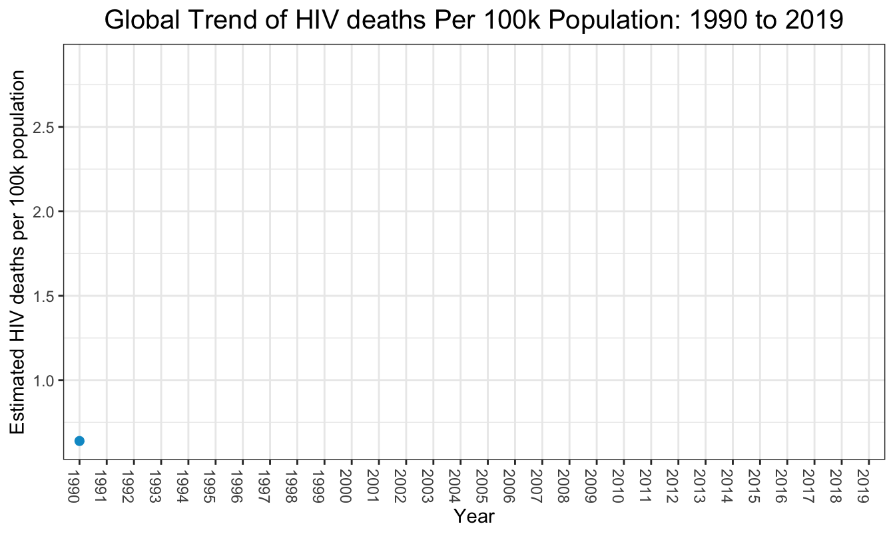
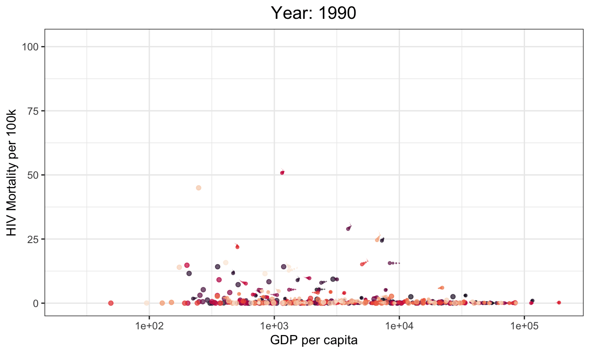

HIV/AIDS Deaths Trends
Global trend of HIV mortality per 100k population: 1990 to 2019
We plot the estimated number of HIV deaths per 100k population across all countries from 1990 to 2019. HIV/AIDS deaths peaked in the early 2000s.

Global trend of HIV mortality per 100k population by sex: 1990 to 2019
Next we plot the estimated number of HIV deaths per 100k population across all countries from 1990 to 2019 by sex. Mortality among females is consistently higher than mortality among males.

Global trend of HIV mortality per 100k population by Age: 1990 to 2019
Next we plot the estimated number of HIV deaths per 100k population across all countries from 1990 to 2019 by age group. Mortality is highest among those in the 25-49 year old age group, and lowest in those who are 75+.

HIV Mortality Rate by Country GDP Per Capita: 1990 to 2019
We next wanted to explore the relationship between GDP per capita and HIV mortality per 100k. The below graph shows that the countries with the highest HIV mortality per 100k tend to be those with lower GDP per capita, which may be indicative of the fact that poorer countries do not have adequate resources to avert otherwise preventable HIV/AIDS deaths.

HIV mortality by Country: 1990 to 2019
We additionally wanted to look at how countries rank in terms of their number of HIV/AIDS deaths. First, we show the 10 countries with the highest total number of HIV/AIDS deaths.
| country_name | count |
|---|---|
| South Africa | 4874295 |
| Kenya | 2583538 |
| United Republic of Tanzania | 2465046 |
| India | 2454374 |
| Nigeria | 2216719 |
| Uganda | 2102166 |
| Zimbabwe | 1836041 |
| Ethiopia | 1788431 |
| Mozambique | 1541267 |
| Malawi | 1265348 |
Next, we show the 10 countries with the highest total number of HIV/AIDS deaths for each year from 1990 to 2019.

Finally, we show the 10 countries with the highest total number of HIV/AIDS deaths adjusted for population size and the 10 countries with the lowest total number of HIV/AIDS deaths adjusted for population size.
Top 10 countries with highest HIV mortality per 100k
| country_name | count_per_100k |
|---|---|
| Lesotho | 54.3809 |
| Eswatini | 50.6240 |
| Zimbabwe | 49.5544 |
| Botswana | 49.0797 |
| South Africa | 33.9966 |
| Malawi | 32.4034 |
| Zambia | 32.2501 |
| Namibia | 26.7923 |
| Mozambique | 24.7988 |
| Uganda | 24.6188 |

Top 10 countries with lowest HIV mortality per 100k
| country_name | count_per_100k |
|---|---|
| Albania | 0.0057 |
| Slovakia | 0.0078 |
| Bosnia and Herzegovina | 0.0079 |
| North Macedonia | 0.0087 |
| Kuwait | 0.0103 |
| Syrian Arab Republic | 0.0105 |
| Bangladesh | 0.0109 |
| Czechia | 0.0114 |
| Egypt | 0.0122 |
| Comoros | 0.0125 |